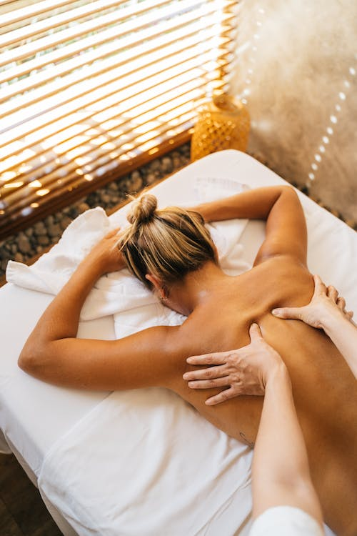

Masoterapia
¿Qué es la Masoterapia?
La masoterapia es un conjunto de técnicas manuales que se emplean con el objetivo de rehabilitar lesiones corporales sobre los tejidos blandos: la piel, tejido muscular y conectivo. Es una técnica con invasiva y a veces complementaria de otros tratamientos; su función es favorecer que los órganos y la musculatura se oxigenen, el cuerpo se relaje, y que la circulación sanguínea y linfática se incremente, favoreciendo además de la circulación, la liberación de endorfinas y la eliminación de toxinas, el bienestar orgánico general y disminuyendo el estrés.
Conoce nuestros servicios
Cada sesión se realiza en un espacio dedicado al bienestar e incluye aromaterapia y aceites esenciales para potenciar los resultados!
Drenaje Linfatico
Consiste en aplicar masajes suaves sobre diferentes partes del cuerpo con el objetivo de mejorar la circulación de la linfa y el sistema linfático. La función de esta técnica es la de mejorar la contracción automática de los vasos linfáticos, ayudando a eliminar edemas, arrastrar los líquidosas células, drenando los mismos.
Masaje Deportivo
Utilizado pre y post entrenamiento, su objetivo es mejorar el rendimiento deportivo, cuidar el cuerpo y acelerar su recuperación evitar las lesiones. También se puede utilizar para la rehabilitación.
Masaje Relajante
Se realiza cuando la persona presenta estrés físico y emocional. Busca proporcionar un bienestar general al organismo mediante la liberación de encefalinas y endorfinas para conseguir un efecto sedante en el sistema nervioso.
Masaje Geotermal
Es una relajante terapia que trabaja no solo en el plano físico, sino en el mental, ya que ayuda a relajar tensiones musculares y a conseguir un perfecto equilibrio energético.
Si queres conocer mas sobre los tipos de masajes podes ir a nuestra seccion dedicada
Tipos de masajes